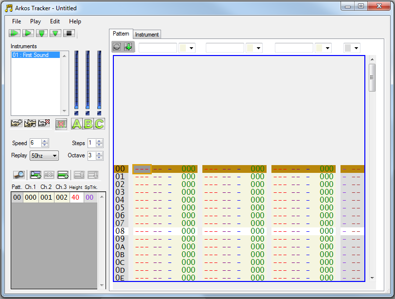

Arkos Tracker
Arkos Tracker is a Windows program developed by Targhan of the CPC group Arkos. The tracker originally was designed to build music scores playable by CPC computers (which uses the same sound chip as the vectrex).
Using Vedi you can import and play back music composed with the Arkos Tracker.
(Arkos Tracker, see:
http://www.julien-nevo.com/arkos/arkostracker1/
and/or
http://www.grimware.org/doku.php/documentations/software/arkos.tracker/start)
The corresponding (popupmenu) entry is called: "Arkos Tracker bin". If you select that entry while a "Arkos Tracker bin" file is selected - that file is converted to a vectrex assembler (data) file.
Using the provided player (which natively on vectrex plays back Arkos Tracker files) - you can immediatly listen to the music - or use it in your own programs.
The Tracker allows to save music files in three differents formats:
aks
bin
ym
The "bin" files can be used by the here described method. If you rather prefer ym files - you can also import them via the in Vedi provided ym-conversion.
Notice:
The ym and bin files sound slightly different. The reason is, that the frequency that is generated by the PSG chip depends on the speed with which the chip itself is run. In case of the vectrex the CPU and the AY 8912 both run with 1500000Hz. The PSG within the CPC runs a bit faster (which is the default setting for the Arkos Tracker). Thus all music pieces which do not compensate the speed difference (ym - files e.g.) will sound a little bit "slower" (or transposed to a lower keynote).
Using the designated player with the "bin" files - compensates that. Since the player plays the "notes" provided by the song, not the PSG settings.
Further explanation:
The actual "frequency" registers of PSG: 0,1; 2,3 an 4,5 are actually "wait counters".
Internally the PSG counts the system clock down from 16 to 0, if 0, it also counts down the value in the frequency register (at each 0 I mean). If the frequency register (counter) is 0 it does initiate another square wave pattern. So - the higher the value in the frequency register - the lower the actual frequency - since it is a "wait counter". And the decrease of the wait counter is done with clock speed/16.
The frequencies and the notes generated by the PSG chip directly relate to the clock speed.
The player
Some technical notes about the player:
the player code (bin) is 1259 bytes long
it uses 74 bytes of RAM
playing a song averages at about 700-800 cycles
starting a new pattern uses more cycles - up to about 1000 cycles (using 3 tracks with "funny" instruments)
the maximum I have seen is 1762 cycles playing the demo song provided with the tracker which uses all kinds of funny stuff
digi drums are not supported
frequency translation table adopted to vectrex PSG frequency of 1500000 Hz
the bin "songs" are converted to DB statements as source code and are converted from little endian to big endian, the fixed memory location is "guessed" and address dependency is removed